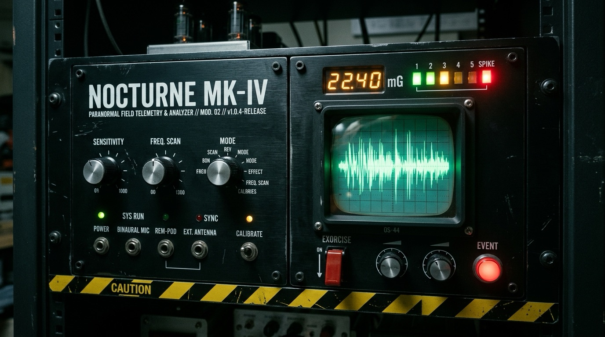

Spatial Floorboard Creak
Multi-modal wood resonance, localized behind you with interaural delay. When your processor runs hot, the boards complain in a lower voice.
Paranormal Telemetry Unit // v1.0.4-RELEASE
It is --:--. You have been still for 0.0s.
Nocturne is a local-first desktop daemon that waits for your typing to falter during the witching hours — then fills the silence with floorboard creaks, phantom keystrokes, spirit-box whispers, and a screen that is not quite the colour it was a moment ago.
Headphones recommended. It knows left from right.
§ 01 — Cognitive lull analyzer
Nocturne never reads what you type. It only listens to the gaps — the moments between keystrokes when your attention drifts and the room goes quiet. That is when it moves.
A thought. A sip of something cold. Your hands leave the keys.
One soft buckling-spring click, somewhere just off to the side. You didn’t press it.
The lull window opens. The REM-Pod array arms. The needle starts to lean.
A floorboard, binaurally placed over your left shoulder. Pitched to the heat of your CPU.
The screen cools by a few percent. Your cursor drifts a pixel or two, in a figure eight. You will tell yourself you imagined it.
This page runs the same analyzer. Stop moving for a while. We’ll wait.
§ 02 — Procedural acoustic manifestation engine
Every sound is synthesized live — no samples, no recordings, nothing to grep for. 48 kHz stereo, streamed straight through a lock-free ringbuffer, limited to just above the noise floor of a quiet room. Loud enough to notice. Quiet enough to doubt.
Multi-modal wood resonance, localized behind you with interaural delay. When your processor runs hot, the boards complain in a lower voice.
A single mechanical switch — the click, then the keycap bottoming out. It arrives exactly when you stop typing, as if someone finished your sentence.
Breath shaped through a three-formant vocal tract, syllabic, orbiting your head. There are no words. You will hear words anyway.
Two raps on structural timber, a hundred and sixty-five milliseconds apart. Then a small metallic click, like a latch deciding.
A transformer ground-loop swelling out of nowhere, crackling with corona. The spectrograph tears. The meter pins red. Nothing is plugged in there.
A standing wave below the threshold of hearing, rising and falling with your machine’s thermal load. You won’t hear this one. You’ll feel it — in your chest, in the back of your neck.
Audio is asleep. Press any specimen to wake it.

§ 03 — Full-screen spectral color-shift
Nocturne reaches past the window and into your display’s hardware gamma tables, bending them along a 1,200 ms cubic-bezier curve — never more than 8% from baseline. Not enough to see happening. Just enough to feel that something has.
The red channel is crushed. Greens and blues surge. Warm skin goes the colour of something that has been underwater for a long time.
hue-rotate(155deg) · R↓ G↑ B↑
The red channel floods. Everything else drains away. Your documents, your code, your face in the webcam preview — all of it, briefly, the colour of a darkroom.
hue-rotate(−55deg) · R↑ G↓ B↓
Planchette micro-drift
At the onset of a manifestation, the pointer is nudged one to three pixels along a Lissajous figure-eight. Like a hand resting lightly on top of yours.
You may have noticed a second cursor on this page. That one isn’t ours.
§ 04 — Witching hour vigil chronometer
Nocturne is dormant until midnight. Between 00:00 and 05:00 — validated in fifteen-minute increments, scrubbable on a 24-hour timeline — it is awake, armed, and listening for the space between your keystrokes. Set a curfew if you dare stay up later.
Consulting the hour…
§ 05 — Hardware exorcise failsafe circuit
Press ESC three times within 800 milliseconds. In under 50 ms the audio is severed,
your display’s true colours are restored, every filter is torn down, and the daemon falls into a deep,
dreamless stasis. It also survives crashes, SIGINT, SIGTERM, and SIGHUP.
Whatever happens, your screen comes back.
3-slot monotonic ringbuffer · filters for 0x1B only · every other key is discarded unread
§ 06 — Zero-egress air gap
It doesn’t want your data. It only wants your silence. Nocturne measures how long you’ve been idle — never what you typed — and nothing it learns ever leaves the machine. The only thing it keeps is a diary, locally, of the nights it visited.
This website keeps the same promise: no trackers, no fonts from elsewhere, no analytics, connect-src 'none'. Everything that happens here, stays here. Including what happened in the log below.
§ 07 — Incident audit log
A live record of this session. Some of these entries are about you.
§ 08 — Invocation
It cannot enter unless you install it. Tauri v2 and Rust. macOS, Windows, and Linux.
Or raise it from source:
# verify the bones before you bring them inside
git clone https://github.com/boredpolymath/nocturne.git && cd nocturne
python3 scripts/generate_release_integrity.py --verify
cargo test --workspace # 54 tests. all of them pass. that’s what worries us.
npm run devEvery release ships with a CycloneDX 1.5 SBOM, SHA256SUMS.txt, and a cargo-deny supply-chain policy. You should know exactly what you’re letting in.